Lokaverkefni
Kaffiborð með Victorian skreytingum, parametrískri hönnun og CNC framleiðslu
Verkefnalýsing
Lokaverkefnið fólst í að hanna og framleiða heilt verkefni sem nýtti eina af þeim framleiðsluaðferðum sem kynntar voru í námskeiðinu. Hópurinn ákvað að velja leið A, þ.e. að hanna og framleiða hlut með ShopBot CNC fræsingu.
Markmiðið var að hanna hlut sem væri bæði nothæfur og sjónrænt áhugaverður, ásamt því að skjalfesta hönnunarferlið, efnisval, verkaskiptingu, framleiðslu og samsetningu á sameiginlegri vefsíðu.
Hugmynd og lausn
Hópurinn ákvað að hanna kaffiborð með áberandi Victorian innblásnum skreytingum. Hugmyndin var að sameina klassískt og skrautlegt formsnið með nútímalegri framleiðsluaðferð.
Áhersla var lögð á að borðið hefði skýrt og glæsilegt yfirbragð, með flæðandi línum og skrautlegum formum í borðplötunni. Þessi nálgun gerði verkefnið einnig áhugavert út frá hönnun innan tæknilegra takmarkana, þar sem sameina þurfti skreytingar, styrk og framleiðanleika.
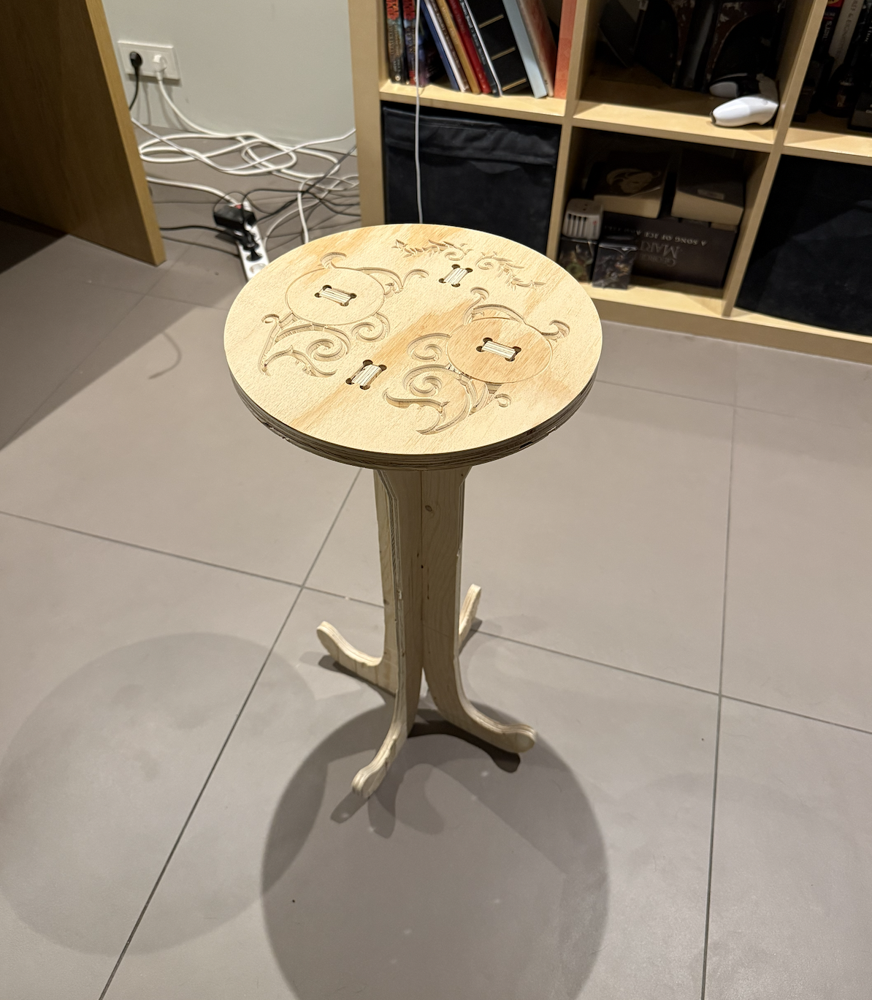
Lokahönnun kaffiborðsins.
Verkaskipting og skipulag
Verkefnið var unnið í þriggja manna hópi og var verkaskipting skilgreind strax í upphafi til að tryggja skýrt flæði í hönnun, undirbúningi og framkvæmd.
- Benni: CAM undirbúningur, toolpaths og stillingar fyrir CNC fræsingu
- Bjarni: Parametrísk hönnun í Fusion 360 og Victorian skreytingar
- Mart: Samsetning og eftirvinnsla hluta
- Allir: Skjalfesting og vefsíðuhönnun
Verkefnið þróaðist í nokkrum skrefum. Fyrst var unnið að hugmyndavinnu og hönnun í Fusion 360. Í framhaldi var farið í CAM undirbúning þar sem toolpaths og skurðstillingar voru skilgreindar.
Að lokum var farið í framleiðslu og samsetningu, þar sem hlutar voru fræstir, hreinsaðir og settir saman í lokaafurð.
Þrátt fyrir að verkaskipting hafi verið skilgreind í upphafi var samstarfið sveigjanlegt og hópmeðlimir aðstoðuðu hver annan eftir þörfum.
Hönnunarferli
1) Parametrísk hönnun í Fusion 360
Borðið var hannað sem parametrískt líkan í Fusion 360. Með því var hægt að skilgreina lykilstærðir eins og þvermál borðplötu, hæð fóta, efnisþykkt og stærð íláta með parametrum og breyta þeim síðar án þess að þurfa að endurteikna líkanið frá grunni.
Þessi nálgun auðveldaði þróun verkefnisins og tryggði að breytingar á hlutföllum og byggingu borðsins væru fljótar í framkvæmd á meðan hönnunin var enn í þróun.
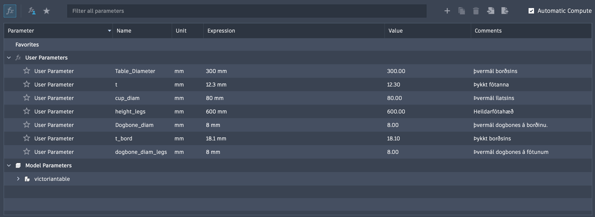
Parametrar sem notaðir voru til að stjórna helstu stærðum borðsins.
2) Form og bygging
Bygging borðsins var mótuð með tilliti til bæði styrks og sjónrænnar heildarmyndar. Fótarnir voru hannaðir með bogadregnum línum sem gefa borðinu léttara yfirbragð, en jafnframt nægjanlegan stöðugleika. Tengingin milli borðplötu og fóta var einnig hönnuð þannig að formið væri samræmt og lesanlegt sem ein heild.
Gagnvirk útgáfa af borðinu í Fusion 360. Ef glugginn birtist ekki: opna í nýjum flipa.
3) Victorian skreytingar
Til að búa til skreytingarnar í borðplötunni var notast við Insert Canvas í Fusion 360. Mynd var sett inn sem viðmið og skrautlínurnar síðan teiknaðar upp með splines til að ná fram mjúkum og flæðandi línum.
Þessi aðferð gerði kleift að endurskapa flóknari Victorian form án þess að þurfa að teikna þau algjörlega frá grunni. Hún gaf jafnframt góða stjórn á lögun skreytinganna svo hægt væri að laga þær að tæknilegum takmörkunum CNC vinnslunnar.
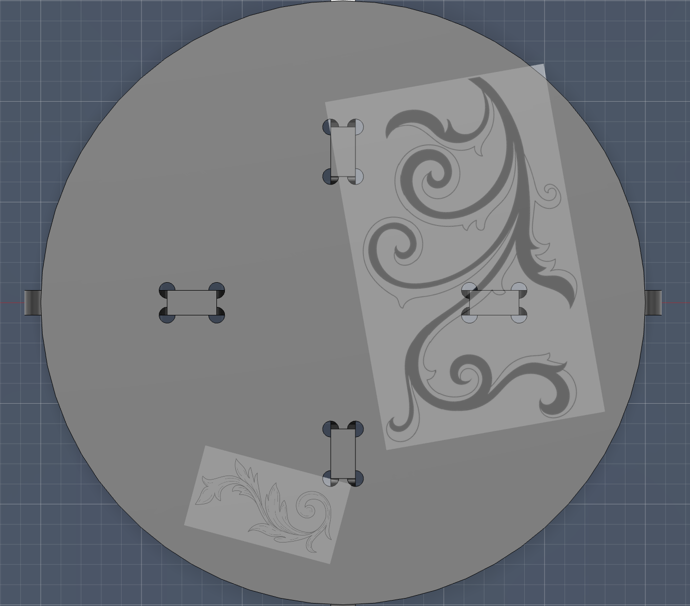
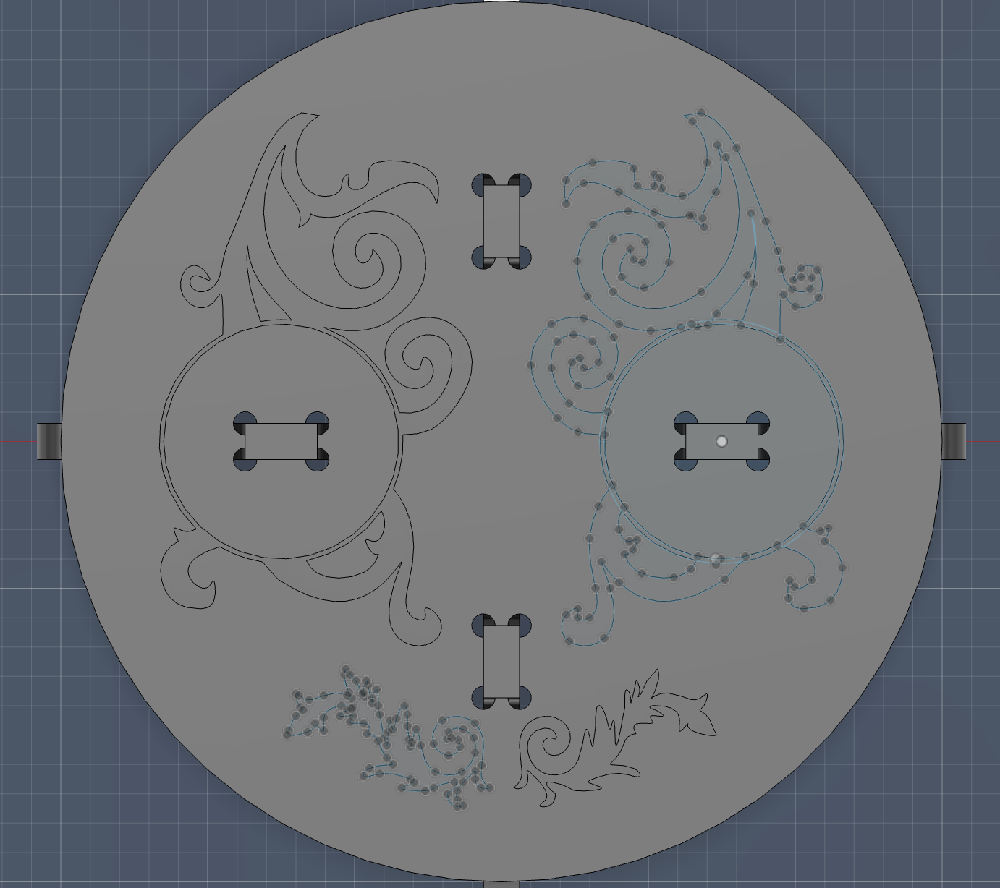
Vinstra megin sést viðmiðunarmynd sem var sett inn með Insert Canvas. Hægra megin sést hvernig skreytingarnar voru endurteiknaðar með splines.
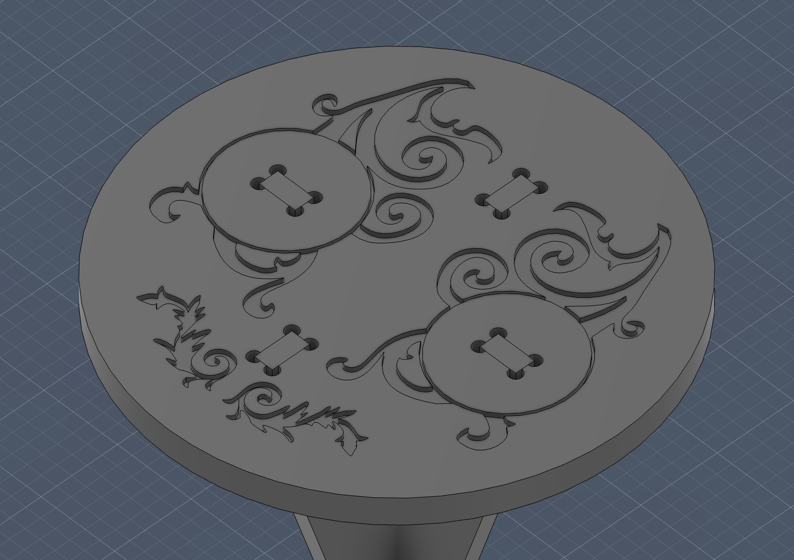
Nærmynd af skreytingunum og opum í borðplötunni.
Framleiðsla
1) Efnisval
Val á efnisþykkt var tekið með tilliti til bæði hönnunar og aðgengis að efni. Fyrir borðplötuna var valinn 18.1 mm krossviður til að tryggja nægilegt svigrúm fyrir skreytingar og stífni í yfirborðinu.
Fæturnir voru hins vegar framleiddir úr 12.3 mm krossvið. Sú þykkt reyndist nægjanleg til að tryggja burðargetu, auk þess sem hún leiddi til minni efnisnotkunar. Einnig var meira magn af því efni til staðar, sem gerði valið hagkvæmt í framkvæmd.
Þar sem mismunandi þykktir voru notaðar kröfðust hlutar verkefnisins einnig aðskildra setup-a í CAM, þar sem skurðdýpt og verkfærasetningar þurftu að aðlaga að hverju efni fyrir sig.
2) Toolpaths og CAM undirbúningur
Borðplata
Þar sem borðplatan og fæturnir voru með mismunandi þykkt þurfti að búa til tvö aðskilin setup í Fusion 360 til að tryggja réttan skurð fyrir hvorn hluta.
Fyrir útlínur borðplötunnar var notað 2D contour toolpath, þar sem valin var closed chain utan um borðið og neðsti flötur hlutarins skilgreindur sem lokadýpt skurðar.
Til að halda borðplötunni fastri í efninu á meðan á fræsingu stóð voru notuð tabs með þykkt 12 mm og hæð 5 mm. Þetta tryggði að hluturinn losnaði ekki frá efninu áður en fræsingu lauk.
Við þennan skurð var notaður 6 mm flat end mill, sem hentar vel fyrir almenna útlínufræsingu og gefur stöðuga og nákvæma niðurstöðu.
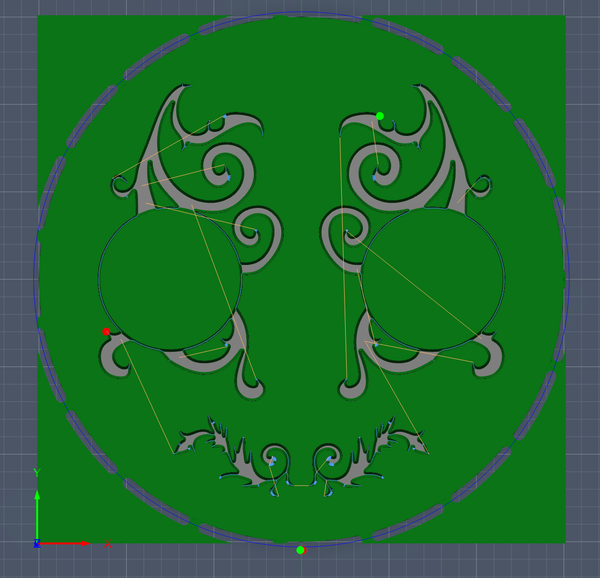
2D contour toolpath fyrir borðplötuna. Bláar línur sýna leið verkfærisins umhverfis útlínur hlutarins, ásamt tabs sem halda honum föstum í efninu.
Engraving og skreytingar
Til að framkvæma skreytingar í borðplötunni var notast við sérstakt engraving toolpath í Fusion 360. Þar sem skreytingarnar eru fínar og krefjast meiri nákvæmni en útlínur var valið að nota engrave/chamfer mill.
Þetta verkfæri gerir kleift að skera V-laga raufar sem henta sérstaklega vel fyrir skrautlínur og letur. Með þessari aðferð var hægt að ná fram skýrum og fagurfræðilega fallegum skreytingum í yfirborði borðsins.
Við skilgreiningu toolpaths voru notaðar closed chain loops og efri brúnir skreytinganna valdar sem leið fyrir verkfærið. Þetta tryggði að skurðurinn fylgdi nákvæmlega útlínum splines-teikninganna sem unnar voru í hönnunarferlinu.
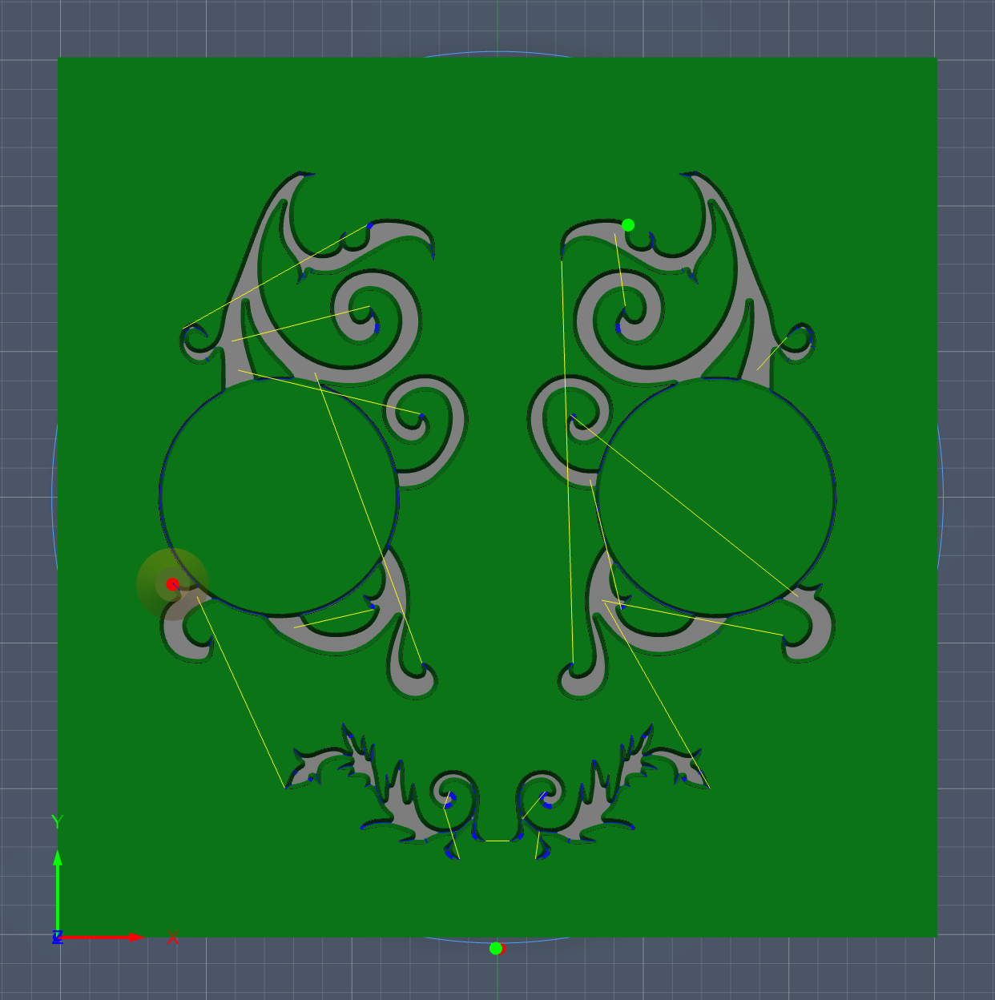
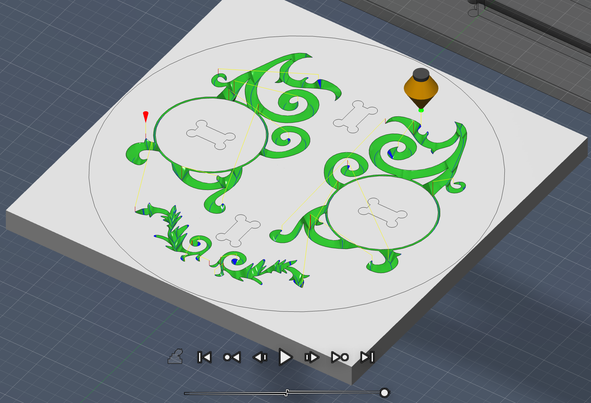
Engraving toolpath fyrir skreytingar. Verkfærið fylgir nákvæmlega eftir útlínum splines og myndar V-laga raufar í yfirborðinu.
Toolpaths voru einnig forskoðuð í Fusion 360 til að tryggja að engir árekstrar eða óæskilegar hreyfingar ættu sér stað áður en kóðinn var sendur í vélina.
Tæknilegar takmarkanir og lausnir
Við hönnun og framleiðslu þurfti að taka tillit til þess að CNC fræsirinn getur ekki skorið fullkomlega skörp 90° innri horn, þar sem fræsibitinn hefur ákveðinn radíus.
Til að leysa þetta var notast við svokallaða dogbone aðferð, þar sem lítil hringlaga göt eru bætt við í hornum samskeyta. Þetta gerir kleift að tryggja að hlutir passi rétt saman þrátt fyrir radíus verkfærisins.
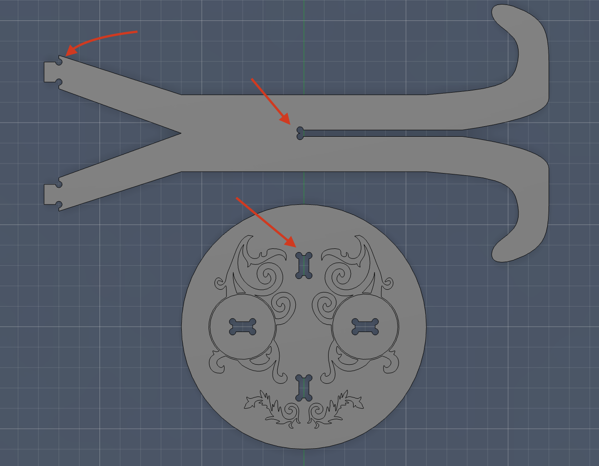
Dogbone aðferð notuð til að bæta upp fyrir radíus fræsibita í innri hornum.
Þessi aðlögun var nauðsynleg til að tryggja nákvæma samsetningu og sýnir mikilvægi þess að hanna með framleiðsluaðferðina í huga frá upphafi. Hún var einnig sérstaklega mikilvæg í samskeytum fótanna við borðplötuna.
Fætur
Fyrir fæturna var notuð sambærileg aðferð og fyrir útlínufræsingu borðplötunnar. Notast var við 2D contour toolpath og sama 6 mm flat end mill og áður, þar sem það verkfæri hentaði vel fyrir ytri útlínur og gaf stöðugan og nákvæman skurð.
Til að halda hlutunum föstum í efninu meðan á fræsingu stóð voru notuð tabs með sömu stærð og áður, en hér var bilið á milli þeirra stillt á 110 mm. Þetta tryggði að fæturnir héldust stöðugir í plötunni þar til skurði lauk, þrátt fyrir langa og mjóa lögun þeirra.
Form fótanna var hannað þannig að þeir gætu skorast saman í miðju og myndað sjálfberandi grunn undir borðinu. Því var mikilvægt að útlínur, raufar og samskeyti kæmu nákvæmlega út í fræsingunni svo samsetningin yrði rétt.
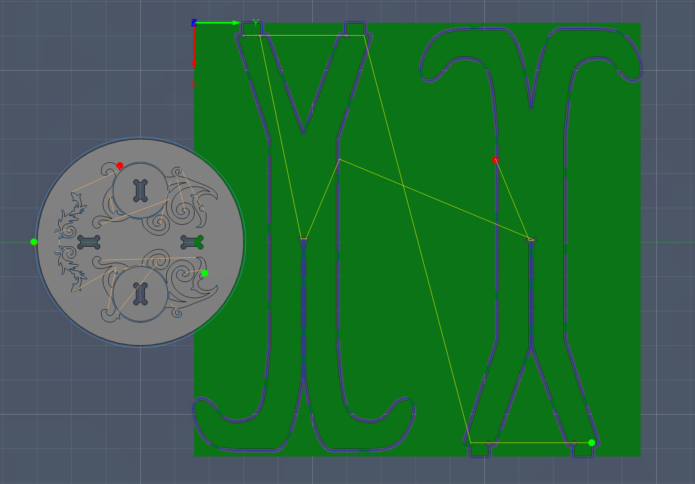
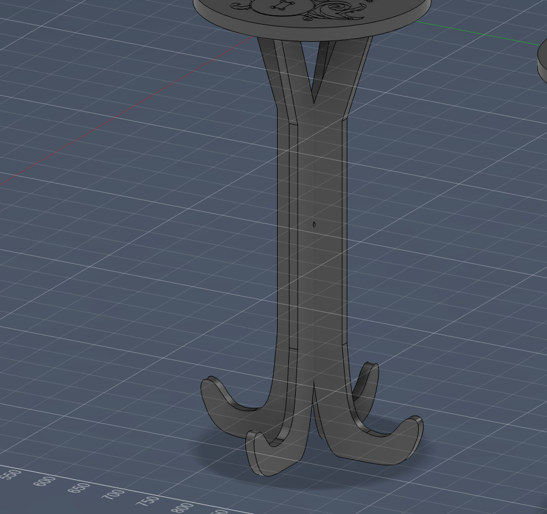
Vinstra megin sést 2D contour toolpath fyrir fæturna, ásamt tabs sem halda hlutunum föstum í efninu. Hægra megin sést Fusion líkan af fótunum og hvernig þeir skerast saman til að mynda grunn borðsins.
Framkvæmd og samsetning
Eftir að toolpaths höfðu verið skilgreindir í Fusion 360 var farið í sjálfa fræsinguna með aðstoð leiðbeinanda. Bæði borðplatan og fæturnir voru fræstir úr krossvið samkvæmt þeim stillingum sem höfðu verið undirbúnar í CAM hlutanum.
Fræsingin gekk vel í heildina og útlínur, skreytingar og tengingar skiluðu sér eins og gert var ráð fyrir í hönnuninni. Eftir að hlutar höfðu verið losaðir úr efninu voru tabs fjarlægð og brúnir hreinsaðar til að undirbúa samsetningu.
Við samsetningu kom hins vegar í ljós að ekki hafði verið gert ráð fyrir nægilegu clearance í samskeytum milli borðplötu og fóta. Þetta leiddi til þess að hlutirnir pössuðu ekki saman til að byrja með og ekki var hægt að ná press-fit tengingu beint eftir fræsingu.
Til að leysa þetta vandamál var gripið til handvirkrar eftirvinnslu. Notaður var sandpappír til að minnka þykkt á samskeytum og í sumum tilvikum var einnig notuð vélsög til að auka bilið lítillega. Með þessu tókst að ná nægilegu clearance til að hlutirnir gætu smollið saman.
Þessi reynsla undirstrikar mikilvægi þess að taka tillit til tolerances í hönnun, sérstaklega þegar unnið er með efni eins og krossvið þar sem þykkt getur verið breytileg og fræsingin sjálf fjarlægir efni.
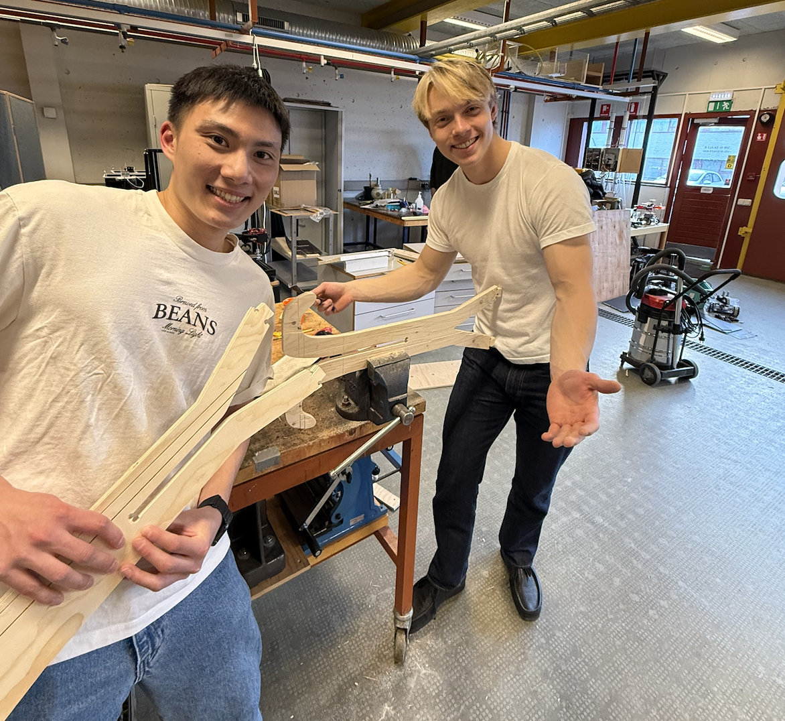
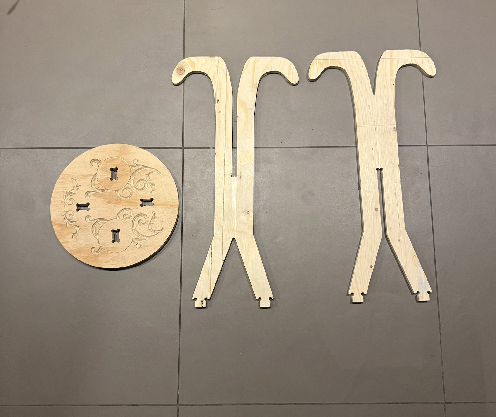
Frá vinstri: Aðlögun samskeyta til að bæta clearance eftir fræsingu, fræstir hlutar áður en samsetning hófst, og lokaniðurstaða verkefnisins.
Eftir þessa aðlögun tókst að setja borðið saman með góðri festingu og lokaniðurstaðan var stöðug og virk. Verkefnið sýndi vel hvernig hönnun, framleiðsla og eftirvinnsla vinna saman í raunverulegu ferli.
Umræða og lærdómur
Verkefnið sýndi vel hversu mikilvægt er að tengja saman hönnun og framleiðslu frá upphafi. Þó að parametrísk hönnun í Fusion 360 hafi gert breytingar einfaldar, kom í ljós að ekki er nóg að hanna hlut sem lítur vel út - hann þarf einnig að vera hannaður með tilliti til framleiðsluaðferðarinnar.
Þetta kom skýrt fram við samsetningu borðsins, þar sem ekki hafði verið gert ráð fyrir nægilegu clearance í samskeytum. Afleiðingin var sú að hlutirnir pössuðu ekki saman eftir fræsingu og þurfti því að grípa til handvirkrar eftirvinnslu með sandpappír og sög. Þetta undirstrikaði mikilvægi þess að skilgreina tolerances í hönnunarfasa, sérstaklega þegar unnið er með efni eins og krossvið þar sem þykkt getur verið breytileg.
Einnig kom í ljós hvernig tæknilegar takmarkanir CNC fræsarans hafa áhrif á hönnun. Þar sem ekki er hægt að skera fullkomlega skörp innri horn var nauðsynlegt að nota dogbone aðferð til að tryggja að samskeyti gætu gengið saman. Þetta sýndi mikilvægi þess að hanna með eiginleika verkfæra í huga frekar en að reyna að laga hönnunina eftir á.
Í hönnunarferlinu reyndist einnig gagnlegt að nota Insert Canvas og spline teikningu til að búa til Victorian skreytingar. Sú aðferð gerði kleift að ná fram flóknu og fagurfræðilega áhugaverðu formi, en krafðist jafnframt þess að einfalda og aðlaga línurnar að því sem raunhæft var að fræsa.
Verkefnið var einnig góð æfing í skipulagi og verkaskiptingu innan hóps. Með því að skipta ábyrgð milli hönnunar, CAM undirbúnings og framkvæmdar tókst að halda góðu flæði í verkefninu og ná fram heildstæðri niðurstöðu.
Í heildina sýndi verkefnið hvernig hönnun, framleiðsla og eftirvinnsla mynda eitt samhangandi ferli. Helsti lærdómurinn var sá að taka þarf tillit til framleiðsluaðferðar, efnis og tolerances strax í upphafi hönnunar til að forðast vandamál síðar í ferlinu.